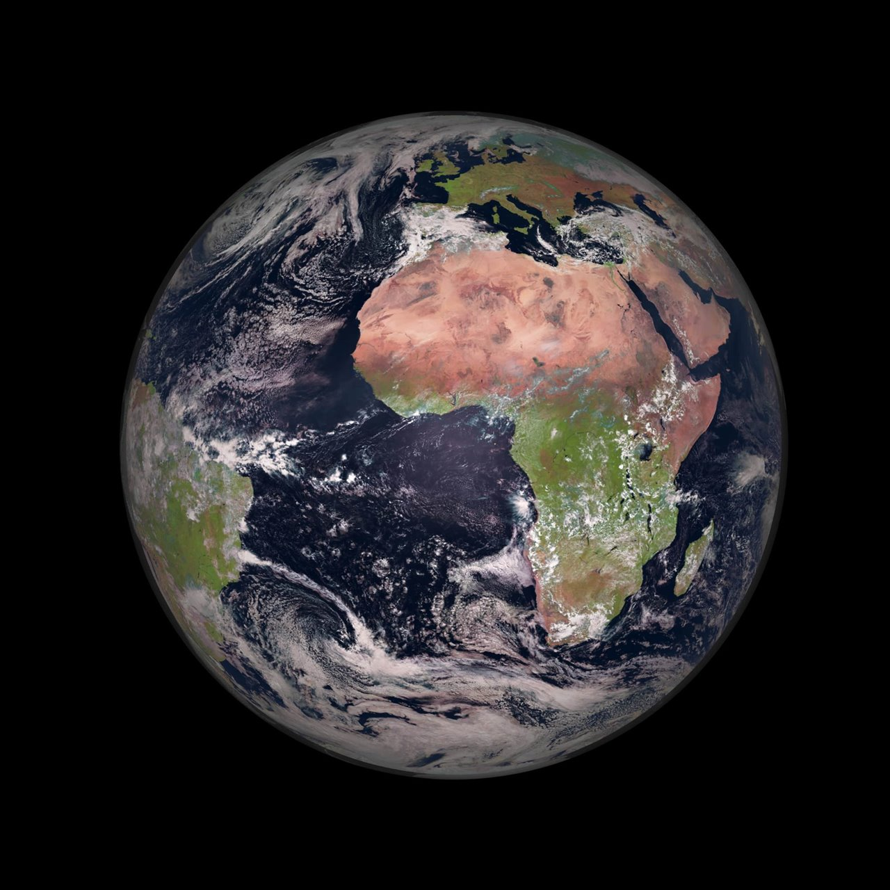
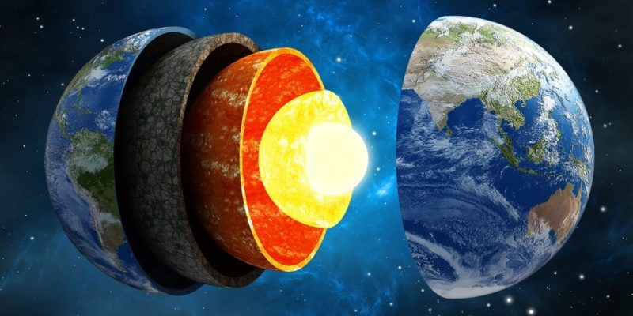

La Tierra es el tercer planeta del sistema solar y el único conocido que alberga vida. Tiene una atmósfera rica en oxígeno, lo que permite la existencia de una gran diversidad de organismos vivos. La Tierra tiene una superficie mayormente cubierta por agua, con océanos que representan aproximadamente el 71% de su superficie. Además, cuenta con una variedad de ecosistemas y climas que sustentan la biodiversidad del planeta.
La Tierra está compuesta por varias capas: la corteza, el manto y el núcleo. La corteza es la capa más externa y más delgada, formada por rocas sólidas. El manto es una capa densa que se encuentra debajo de la corteza y está compuesta por materiales semisólidos. El núcleo es la parte central de la Tierra, dividida en un núcleo externo líquido y un núcleo interno sólido.
